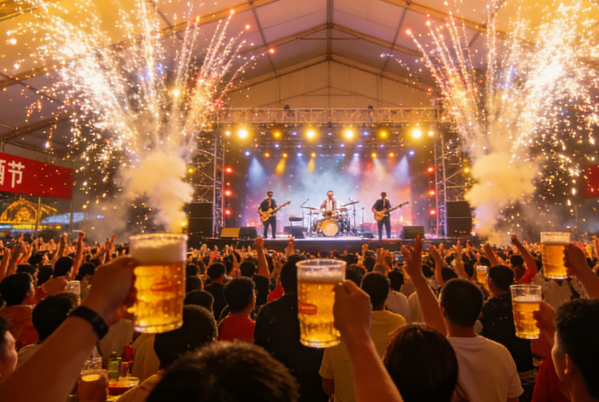
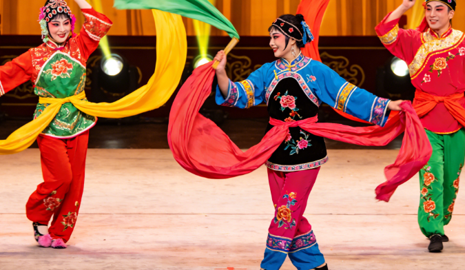
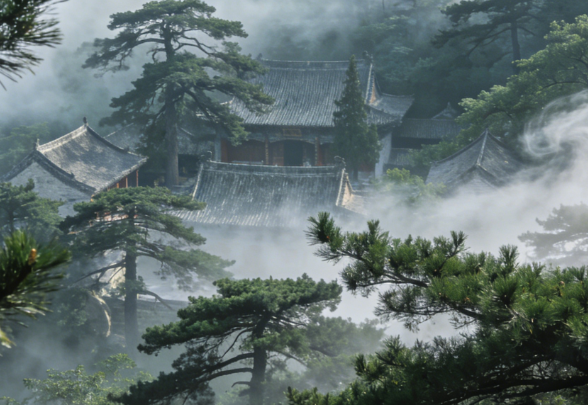
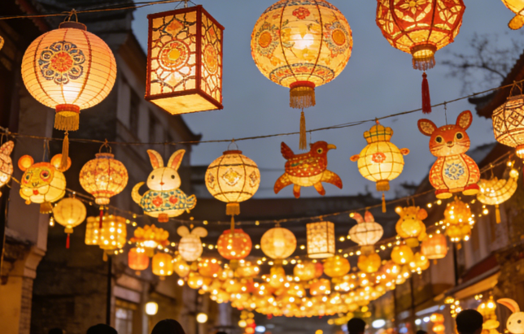
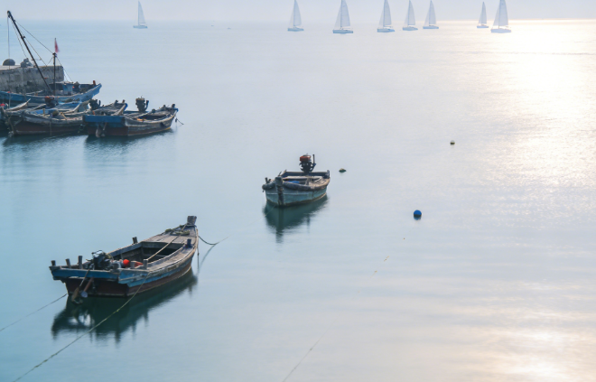
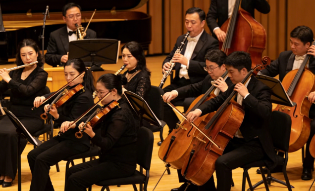
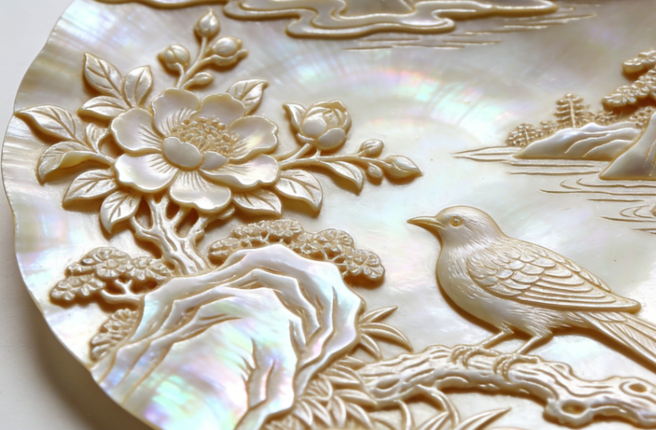

Customs & Traditions
Qingdao's culture is a vibrant tapestry woven from ancient Chinese traditions, Taoist philosophy, and over a century of international exchange. The city's festivals, arts, and daily customs reflect its unique position as a meeting point between East and West.

Qingdao International Beer Festival
Held every August since 1991, this is the largest beer festival in Asia and one of the most celebrated in the world. Over two million visitors gather to enjoy beers from around the globe, live music performances, carnival rides, and spectacular fireworks displays. The festival transforms the Golden Sand Beach area into a vibrant celebration of joy and camaraderie.

Folk ArtJiaozhou Yangge Dance
A traditional folk dance rooted in the local Jiaozhou area, Yangge features colorful costumes, rhythmic movements, and joyful expressions. Performed during harvest festivals and spring celebrations, it embodies the warmth and vitality of the Shandong people, with dancers telling stories of rural life through graceful choreography.

SpiritualTaoist Heritage at Laoshan
Mount Lao has been a sacred Taoist site for over two thousand years. The Taiqing Palace, the oldest and largest Taoist temple on the mountain, continues to be a place of meditation and spiritual practice. The mountain's misty peaks and ancient trees create an atmosphere of profound tranquility that draws seekers from around the world.

TraditionLantern Festival Celebrations
During the Lunar New Year period, Qingdao comes alive with elaborate lantern displays, dragon dances, and temple fairs. The coastal parks and historic streets are adorned with thousands of handcrafted lanterns, creating a magical nighttime spectacle that honors centuries-old Chinese traditions while embracing modern artistic creativity.

LifestyleOcean Culture & Sailing
As the "City of Sailing," maritime culture runs deep in Qingdao's identity. From traditional fishing villages to international sailing regattas, the sea shapes the city's rhythm. Residents gather at dawn for morning swims, fishermen bring in their daily catch, and sailboats dot the horizon, all reflecting a deep and enduring bond with the ocean.

ArtsClassical Music & Opera
Qingdao has a rich classical music heritage, hosting the annual Qingdao International Music Festival. The city's concert halls and theaters regularly feature performances ranging from Western symphonies to traditional Chinese opera, reflecting the city's cosmopolitan character and deep appreciation for artistic excellence.

CraftsmanshipShell Carving Art
Qingdao's coastal location has given rise to the unique art of shell carving, where skilled artisans transform seashells into intricate works of art. This delicate craft, which dates back generations, creates stunning decorative pieces featuring landscapes, flowers, and mythical scenes carved into natural shells.